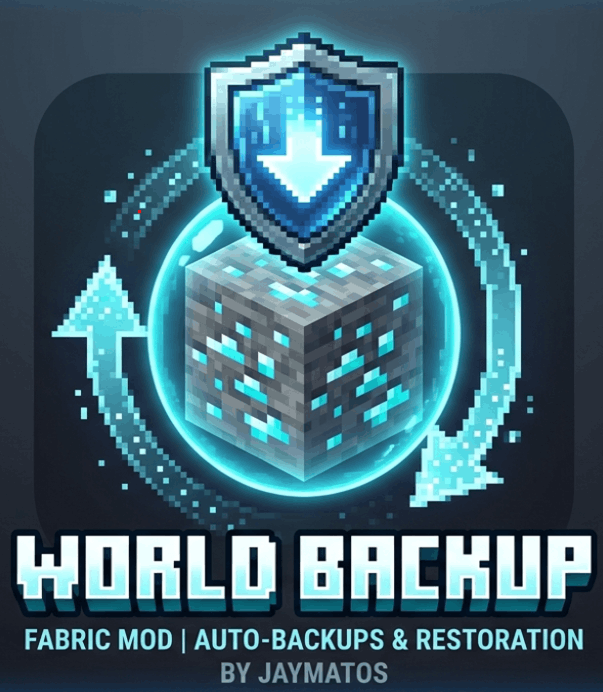

Never lose a Minecraft world again. The most reliable backup mod for your server and singleplayer worlds.
Download on ModrinthAuto World Backup runs silently in the background, securing your progress without you ever having to think about it. Watch the quick showcase below to see how to configure your custom backup intervals.
Configure custom intervals so you never have to remember to backup your progress manually.
Runs quietly in the background without causing lag spikes or interrupting your gameplay.